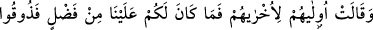
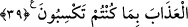

olacaktır. Nitekim Rasûlullah (a.s.): “Yeryüzünde Allah Allah diyen bulunduğu sürece
kıyamet kopmaz.”[30] buyurmuştur.
Geçmiş ve gelecek ümmetlerden “her ümmet” cehenneme “girdikçe” kendisine
uyduğu için yoldan çıktığı “kendi yoldaşına lanet edecek.” Müşrikler müşriklere,
yahudiler yahudilere, hristiyanlar hristiyanlara, mecûsiler mecûsilere ve diğer
topluluklar da bu şekilde birbirlerine lanet edecek. Tâbi olanlar liderlerine lanet edecek
ve “Allah size lanet etsin! Siz bizi aldattınız.” derler.
Buradaki “yoldaşlık”tan maksat din ve diyânet yoldaşlığı olup bununla “ümmet” ve
“cemaat” kastedildiği için müzekker değil, müennes olarak zikredilmiştir.
“Hepsi birbiri ardından orada toplanınca” onlar bu şekilde grup grup birbirlerine
lanet yağdırarak cehennemde toplanıp bir araya geldiklerinde “sonrakiler” sonra giren
grup yani tâbi olanlar “öncekiler için” kendilerine tâbî oldukları kimseler hakkında
Allah Teâlâ’ya “diyecekler ki: “Ey Rabbimiz, bizi saptıran işte bunlardır.” Bizi
şüphelendirerek hidayet yolundan ayırıp sapıklık yoluna sürdüler. Biz de onlara uyduk
ve bu hale düştük. Bu sebeple “bunlara ateşten bir kat daha azab ver.” kat kat daha
fazla ateş azabı tattır. Çünkü onlar, hem kendileri sapmış, hem de başkalarını
saptırmışlardır.
Allah: Öncekiler ve sonrakilerden “her biri için bir kat fazla” azab “vardır. Ama
siz” kendiniz için ve her bir grup için olacak azabın ne olduğunu “bilmezsiniz.”
buyurur.” Kendilerine uyulan liderler için küfürleri ve başkalarını da saptırmaları
sebebiyle, tâbi olanlar için ise küfürleri ve liderlerini taklîd etmeleri nedeniyle bir kat
daha azab vardır. Yoksa burada her birinin hakettiği azabın katlanması
kastedilmemektedir. Çünkü bu zulümdür. Burada anlatılmak istenen, sapıklık sebebiyle
olan azaba başkalarını saptırma ve başkalarını taklîd etme azabının da eklenmesidir.
39. Öncekiler de sonrakilere derler ki: Sizin bize bir üstünlüğünüz yok. O halde
siz de yaptıklarınıza karşılık azabı tadın!
Allah Teâlâ’nın cevabını duyan muhatablardan “öncekiler de sonrakilere derler ki:”
Küfür ve sapıklıktan uzak durmak hususunda “sizin bize bir üstünlüğünüz yok.” O
halde nasıl olur da size verilecek olan azabın bizimkinden daha hafif, bize verilecek
azabın da sizinkinin bir kat fazlası olmasını umarsınız? Halbuki biz sizi küfre zorlamış
da değildik. Bilakis siz, arzu ve isteklerinize uygun düşmesi sebebiyle kendi arzunuzla
küfrü tercih ettiniz. “O halde kazandıklarınıza karşılık” olarak kat kat olan “azabı
tadın.”
Bulunduğunuz durum, küfrünüz dolayısıyla kazandığınız şeylerdir. Şimdi ise düçar